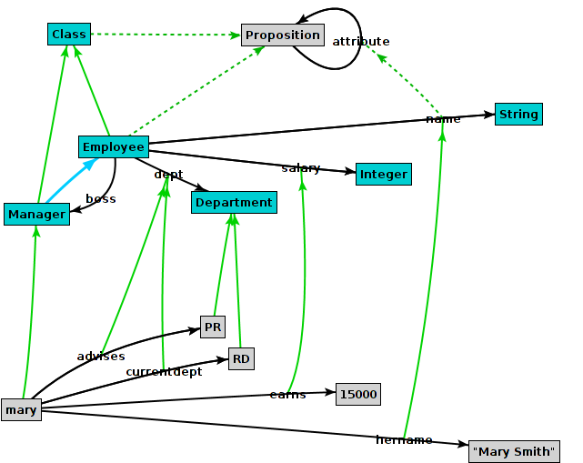
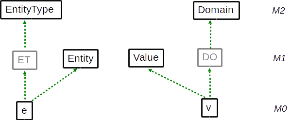
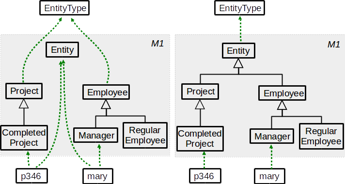
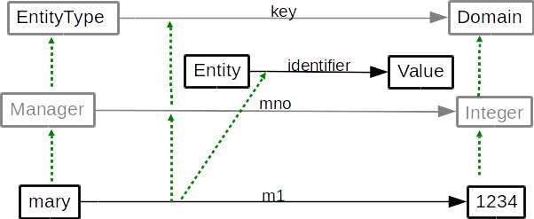
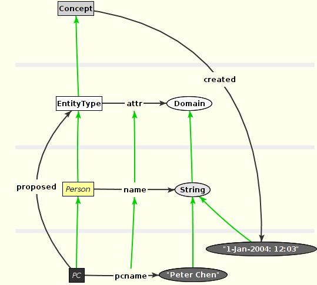

ConceptBase.cc is an implementation of the O-Telos data model. O-Telos is derived from the knowledge representation language Telos as designed by Borgida, Mylopoulos and others [MBJK90]. While Telos was geared more to its roots in artificial intelligence, O-Telos is more geared to database theory, in particular to deductive databases. Nevertheless, O-Telos is to a large degree compatible to the original Telos specification. In some respects, it generalizes Telos, for example by removing the requirement to classify objects into the levels for tokens, simple classes, and meta classes. In O-Telos, we have just five predefined objects (see appendix on the axioms of O-Telos).
Telos (and O-Telos) as well also have strong links to the semantic web, in particular to the triple predicates used for defining RDF(S) statements. The main difference is that O-Telos is based on quadruples where the additional components identifies the statement. While RDF(S) has to use special link types to reify triple statements, i.e. to make statements about statements, O-Telos statements are simply referred to by their identifier.
Telos’ structurally object-oriented framework generalizes earlier data models and knowledge representation formalisms, such as entity-relationship diagrams or semantic networks, and integrates them with predicative assertions, temporal information, and in particular metamodeling. This combination of features seems to be particularly useful in software information applications such as requirements modeling and software process control. A formal description of O-Telos can be found in [MBJK90, Jeus92]. The following example is used throughout this section to illustrate the language:
A company has employees, some of them being managers. Employees have a name and a salary which may change from time to time. They are assigned to departments which are headed by managers. The boss of an employee can be derived from his department and the manager of that department. No employee is allowed to earn more money than his boss.
This section is organized as follows: first, the "logical" and "frame" representations of O-Telos are explained. Then, the predicative sublanguage for deductive rules and integrity constraints are presented. Subsection 2.3 presents a declarative query language which introduces queries as classes with optional predicative membership specification.
As a hybrid language O-Telos supports two different representation formats: a logical ("propositions") and a frame representation. The latter format is based on the logical one. As explained in the next subsections the logical representation also forms the base for integrating a predicative assertion language for deductive rules, queries, and integrity constraints into the frame representation. We start with the so-called P-fact representation of a O-Telos database.
A historical O-Telos database is a finite set of propositions (=P-facts=objects):
| OB = {P(oid,x,n,y,tt)| oid,x,y,tt ∈ ID, n ∈ LABEL} |
where oid has the key property within the set, ID is an infinite but countable set of identifiers. The set LABEL is a set of names over some alphabet. The components oid, x, n, y, tt are called identifier, source, label (or name), destination and transaction time of the proposition1. We read them as follows:
The object x has a relationship called n to the object y. This relationship is believed by the system for the time interval tt.
The transaction time tt is represented by two time points tt(a,b), where a is the time when the tell time and b the untell time of the P-fact. The historical O-Telos database is the basis for the rollback O-Telos database that is visible at a given point of time.
| OBrbt = {P(oid,x,n,y)| P(oid,x,n,y,tt) ∈ OB, rbt ≪ tt} |
The clause t1 ≪ t2 expresses that the time interval t1 is contained in time interval t2, i.e. t1 is during t2. The value of the rollback time depends on the kind of formula to be processed: integrity constraints are always evaluated against the current database OBnow2 (now=the smallest time interval that contains the current time). The rollback time of queries is usually provided together with the query when it is submitted from a user interface to a ConceptBase server. By default, it is now as well. Subsequently, we shall use OBrbt rather than OB. Note that OBrbt strips the transaction time tt from the P-facts. We shall still call both a P-fact. Any P-fact from OBrbt has a unique counterpart in OB, hence the transaction time can always be looked up in OB. We demand that any OBrbt is consistent but do not demand it for the database OB, which stores the whole history of updates.
O-Telos imposes some structural axioms on databases, e.g. referential integrity, correct instantiation and inheritance ([Jeus92]). The complete list of axioms is contained in appendix B. The axioms are linked to predefined objects that are part of each O-Telos database. There are five predefined O-Telos objects for five patterns of propositions:
ConceptBase supports deductive rules for deriving the instantiation of an object to a class and attributes/relations between objects. This derived information has no object property, i.e. it is not identified and it is not represented as a proposition. Specifically, the instantiation of propositions to the above five pre-defined objects is derived by deductive rules, specifically by axioms 18-22 in appendix B.
Additional to the above predefined classes3, there are the builtin classes Class, Integer, Real and String. Class contains all so-called classes (including itself) as instances. The only special property of Class is the definition of two attribute categories rule and constraint. Hence, instances of classes can have deductive rules and integrity constraints. Integer and real numbers are written in the usual way, strings are character sequences, e.g. "this is a string". These three classes are supported by comparison predicates like (x < y) discussed in section 2.2, and by functions like PLUS, MINUS discussed in section 2.5.
As legacy support, ConceptBase provides the pre-defined classes Token, SimpleClass, MetaClass, and MetametaClass to structure the database into objects that have no instances (tokens), objects that have only tokens as instances (simple classes), objects that have only simple classes as instances (meta classes), and finally objects that have only meta classes as instances (meta meta classes). These classes are provided only for compatibility with older Telos specifications. In fact, an absolute hierarchy from tokens to simple classes to meta classes etc. is not an essential ingredient of O-Telos and in many situations too restrictive.
Instead, meta class levels are implicitely expressed via instantiation. If an object x is an instance of object c and object c is an instance of object mc, then mc is also called a meta class of x, and c a class of x. Being a class or a meta class is relative to the object x that we consider. For example, mc is the class of c. This implicit definition of the meta class concept is far more flexible than a fixed structure:
Strict conformance to the membership to meta class levels can still be enforced by user-definable integrity constraints.
As a user, you don’t work directly with propositions but with textual (frame) and graphical (semantic networks) views on them. Both are not based on the oid’s of objects but on their label components. To guarantee a unique mapping we need the following naming axiom:
Naming axiom (see also axioms 2,3,4 in appendix B)
- The label (“name”) of an individual object must be unique, i.e. if two objects have the same label than they are the same.
- The label of an attribute must be unique within all attributes with a common source object, i.e. no two explicit attributes of the same object can have the same label. However, two different objects can well have attributes sharing the same label.
- The source and destination of an instantiation object are unique, i.e. between two objects x and y may be at most one explicit instantiation link.
- The source and destination of a specialization object are unique.
The frame syntax of O-Telos groups the labels of propositions with common source o around the label of o. The exact syntax is given in appendix A. In this section we introduce it by modeling the employee example:
Employee in Class with
attribute
name: String;
salary: Integer;
dept: Department;
boss: Manager
end
Manager in Class isA Employee end
Department in Class with
attribute
head: Manager
end
The label of the “common source” in the first frame is Employee. It is declared as instance of the class Class and has four attributes. The class Manager is a subclass of Employee.
Oid’s (preceded by ‘#’ in our examples) are generated by the system. This leads to the following set of propositions corresponding to the frames above. The transaction time inserted by the system is denoted by omission marks.
P(#E,#E,Employee,#E) P(#1,#E,*instanceof,#Class) P(#3,#E,name,#String) P(#4,#E,salary,#Integer) P(#5,#E,dept,#D) P(#6,#E,boss,#M) P(#M,#M,Manager,#M) P(#7,#M,*instanceof,#Class) P(#8,#M,*isa,#E) P(#D,#D,Department,#D) P(#9,#D,*instanceof,#Class) P(#10,#D,head,#M)
Instantiation to the pre-defined class Individual is implicitly given by the structure of the three individual propositions named Employee, Manager, and Department. Analogously, the attributes #3, #4, #5, #6 and #10 are automatically regarded as instances of the class Attribute. The instances of Attribute are also called attribution objects or explicit attributes. Propositions #1, #2, #7 and #9 are instances of the class InstanceOf (holding explicit instantiation objects), and #8 is an instance of the class IsA (explicit specialization objects). Note that all relationships are declared by using the identifiers (not the names) of objects. Thus, #Class, denotes the identifier of the object Class etc.
The identifiers are maintained internally by ConceptBase’s object store. Externally, the user refers to objects by their name. A standard way to describe objects together with their classes, subclasses, and attributes is the frame syntax. Frames are uniformly based on object names.
The next frames establish two departments labelled PR and RD and state that the individual object mary is an instance of the class Manager. Mary has four attributes labelled hername, earns, advises and currentdept which are instances of the respective attribute classes of Employee with labels name, salary and dept.
mary in Manager with
name
hername: "Mary Smith"
salary
earns: 15000
dept
advises:PR;
currentdept:RD
end
PR in Department end
RD in Department end
The corresponding propositions for the frame describing mary are:
P(#mary,#mary,mary,#mary) P(#E1,#mary,*instanceof,#M) P(#E3,#mary,hername,"Mary Smith") P(#E4,#E3,*instanceof,#3) P(#E5,#mary,earns,15000) P(#E6,#E5,*instanceof,#4) P(#E7,#mary,advises,#PR) P(#E8,#E7,*instanceof,#5) P(#E10,#mary,currentdept,#RD) P(#E11,#E10,*instanceof,#5)
The attribute categories name, salary and dept must be defined in one of the classes of mary. In this case mary is also instance of Employee due to the following axiom which defines the inheritance of class membership in O-Telos, and hence can instantiate these attributes:
Specialization axiom (axiom 13 in appendix B)
The destination (“superclass”) of a specialization inherits all instances of its source (“subclass”).
An example is the specialization #8: all instances of Manager (including mary are also instances of Employee. O-Telos enforces typing of the attribute values by the following general axiom:
Instantiation axiom (axiom 14 in appendix B)
If p is a proposition that is instance of a proposition P then the source of p must be an instance of the source of P, and the destination of p must be an instance of the destination of P.
For example, “Mary Smith” must be an instance of String. The individual mary also shows another feature: attribute classes specified at the class level do not need to be instantiated at the instance level. This is the case for the boss attribute of Employee. On the other hand, they may be instantiated more than once as e.g. dept.
In some cases for attribute categories occuring in a frame the corresponding objects which are instantiated by the concrete attributes, can not uniquely be determined4. This multiple generalization/instantiation problem is solved5 by the following condition which must hold for O-Telos databases:
Multiple generalization/instantiation axiom (axiom 17 in appendix B)
If p1 and p2 are attributes of two classes c1 and c2 which have the same label component l, and i is a common instance of c1 and c2 which has an attribute with category l, then there must exist a common specialization c3 of c1 and c2 with an l labelled attribute p3 which specializes p1 and p2, and i is instance of c3. Particularly if c1 is specialization of c2 and p1 is specialization of p2, c1 and p2 already fulfill the conditions for c3 and p3.
O-Telos treats all three kinds of relationships (attribute, isa, in) as objects. Thus each attribute, instantiation or generalization link of Employee may have its own attributes and instances. For example, each of the four Employee attributes is an instance6 of an attribute class denoted by the label attribute but can also have instances of its own. The attribute with label earns of mary is an instance of attribute salary of class Employee. Syntactically, attribute objects are denoted by appending the attribute label with an exclamation mark to the name of some individual. The relationship between salary and earns could be expressed as
mary!earns in Employee!salary end
Instantiation links are denoted by the operator ”->” and specialization links by
”=>”. They should always be enclosed in parentheses:
(mary->Manager) end (Manager=>Employee) end
The operators can be combined to form complex expressions.
The next example shows how to reference the instantiantion link
between the attribute mary!earns and its attribute class Employee!salary.
The second frame shows that arbitrarily complex expressions are possible.
The parentheses have to be used to make the operator expressions unique. The attribution operator
”!” has a stronger binding than the instantiation and specialization operators.
According to our own experience, complex expressions for denoting objects are rare in modeling.
It is good to know that any object in O-Telos can be
uniquely referenced in the frame syntax.
(mary!earns->Employee!salary) with
comment
com1: "This is a comment to an instantiation between attributes"
end
(mary!earns->Employee!salary)!com1 with
comment
com2: "This is a comment to the the previous comment attribute"
end
The labels InstanceOf, IsA and Attribute for the three Telos system classes are indeed alias names for the following object expressions:
Attribute <---> Proposition!attribute InstanceOf <---> Proposition->Proposition IsA <---> Proposition=>Proposition
Hence, Attribute as the alias name for the attribute with label attribute of Proposition. InstanceOf is the alias name for the instantiation link between Proposition and Proposition. The object Proposition is indeed an instance of itself because it has the shape of an individual object, which is a special case of the shape of a proposition. Finally, IsA is an alias name for the specialization link between Proposition and Proposition. This representation is deviates slightly from the axioms in appendix B because it was originally implemented in ConceptBase in this way. The reflexive definition of InstanceOf (IsA) as instantiation (specialization) links is redundant since O-Telos axioms 18-22 derive these instantiations anyway.
Figure 2.1 shows the graphical representation of mary and her relationships to the other example objects. Labelled links are attributes/relations. The thicker link from Manager to Employee is a specialization. The other links are instantiations. If a link is dotted, then it is derived. Individual objects are displayed as nodes.

Figure 2.1: Graph representing the example database
O-Telos propositions have a temporal component: the transaction time7. The transaction time of a proposition is not assigned by the user but by the system at the the time of an update (TELL, UNTELL, RETELL). ConceptBase uses right-open and closed predefined time intervals. Right-open time intervals are represented like in the subsequent example:
P(#mary,#mary,mary,#mary,tt(millisecond(1992,1,11,17,5,42,102),
infinity))
The object mary is believed since 17:05:42 on January 11, 1992. The label ’infinity’ denotes that the end time of the object lies in the future and is not yet known. In any case, the current time ’now’ is regarded to be smaller than ’infinity’. Right-open transaction times indicate objects that are part of the “current” knowledge base.
Closed intervals (denoted by binary tt-terms) indicate “historical” objects, i.e. objects that have been untold. Example:
P(#E1,#mary,*instanceof,#M,tt(millisecond(1992,1,11,17,5,42,0),
millisecond(1995,12,31,23,59,59,999))
The object #E1, i.e. the instantiation of mary to the class Manager is believed from 17:05:42 on January 11, 1992, until the end of the last millisecond of the year 1995. We call the first component of the transaction time also the start time object and the second component the end time. Start and end time of an object can be retrieved by the predicates Known, and Terminated (see section 2.2). Transactions in ConceptBase usually add or terminate several propositions. At the begin of the transaction, ConceptBase reads the current time and uses it to set the transaction time of all affected propositions. Consequently, all inserted propositions get the same start time of their transaction time and all terminated propositions get the same end time of their transaction time. The database does not change between two transactions, hence the finite sequence of transaction times can be used to enumerate all updates to the database. Examples on how to inspect the database using the transaction time are in the CB-Forum at link.
The ConceptBase predicative language CBL [JK90] is used to express integrity constraints, deductive rules and queries. The variables inside the formulas have to be quantified and assigned to a “type” that limits the range of possible instantiations to the set of instances of a class. ConceptBase offers a set of predicates for the predicative language defined on top of an O-Telos database as visible for a given rollback time, i.e. OBrbt for some rbt. Any rule, constraint or query is run against OBrbt rather than the full database OB.
The following predicates provide the basic access to an O-Telos database. Some have both an infix and a prefix notation. As usual we employ the object identifer to refer to an object.
"tt(millisecond(yr,mo,d,h,min,sec,millisec))".
It is regarded as an instance of the class TransactionTime.
"tt(infinity)".
The predicates In2 and A2 are also called macro predicates since they are standing for sub-formulas. They are fully supported in constraints of query classes. The predicate A2 is not yet supported for deductive rules and integrity constraints due to limitations of the formula compiler. You can use the AL predicate instead. Examples on using macro predicates are available from the CB-Forum (link). They are also discussed in more detail in section 2.7.
The relation of the above predicates and the P-facts of the database is defined by the O-Telos axioms (appendix B). For example, axiom 7 states
| ∀ o,x,n,y,p,c,m,d P(o,x,n,y) ∧ P(p,c,m,d) ∧ In(o,p) ⇒ AL(x,m,n,y) |
So, if an attribute object o of an object x is an instance of an attribute object p of the object c, then AL(x,m,l,y) (also written as (x m/n y) can be derived. This axiom provides those solutions to the AL predicate that are directly based on P-facts. Further solution can be derived via user-defined deductive rules. The other predicates are based on P-facts as well. The Ai predicate is for historical reasons not included in the list of axioms. It is defined as
| ∀ o,x,n,y,p,c,m,d P(o,x,n,y) ∧ P(p,c,m,d) ∧ In(o,p) ⇒ Ai(x,m,o) |
There are a few variants for the predicates for instantiation, specialization and attribution to check whether a fact is actually stored or deduced:
The above predicates can be used, for example, to define defaults values (see link) Since deduction should be transparent to the user, one should avoid using the above predicates if the proper predicates In(x,c) and A(x,n,y) can do the job.
The attribution of objects in O-Telos (axioms 7 and 8 in appendix B) is more generic than in object-oriented approaches, in particular UML. In O-Telos, an attribution relates two arbitrary objects. In languages such as UML, attributes are defined at classes to declare which states an object (instance of the class) may have. This is well possible in O-Telos as well, e.g. by declaring the integer-valued salary attribute of a class Employee and using it for instances of the class. However, O-Telos does not restrict attributes to just values. The target of an attribute can be any object. Hence, the concept of an attribute in O-Telos is the generalization of an UML association and an UML attribute. A second difference is that an O-Telos attribute has essentially several labels tagged to it: its own label (object label) and the labels of its attribute categories (class labels). The latter are the labels of the attributes declared at the classes of an object, the first is the label of the attribution at the level of the object that has the attribute. We illustrate this subsequently.
Attributes at the instance level are instances of attributes at the class level (=attribute categories). An attribute category at the class level can be instantiated several times at the instance level. For example, consider the frame for Mary:
mary in Manager with
name,aliasname
hername: "Mary Smith"
salary
earns: 15000
dept
advises:PR;
currentdept:RD
end
The object mary has four attributes with object labels hername, earns, advises, and currentdept. The attribute categories are name, aliasname, salary, and dept. The last category is instantiated twice. ConceptBase uses the following predicate facts (infix variant of the AL predicate) to express the content of the frame:
(mary in Manager) (mary name/hername "Mary Smith") (mary aliasname/hername "Mary Smith") (mary salary/earns 15000) (mary dept/advises PR) (mary dept/currentdept RD)
So, there are four attributes using four attribute categories. Like an object can have multiple classes, an attribute can have multiple categories. In fact, explicit attributes in O-Telos are just objects and their attribute categories are their classes. At the lowest abstraction level (tokens), the object labels of the attributions frequently do not carry a specific meaning and can then be neglected when formulating logical expressions. The attribution predicate (x m y) performs just this projection. In the example, the following attributions facts are true:
(mary name "Mary Smith") (mary aliasname "Mary Smith") (mary salary 15000) (mary dept PR) (mary dept RD)
The class labels name, aliasname etc. are defined at an abstraction level where the meaning of some application domain is captured. The class label (attribute category) of an attribute is defined as an object label of an attribute at the class level. For example, the name and aliasname attributes could be defined for the class Employee as follows:
Employee in Class with
attribute,single
name: String
attribute
aliasname: String
end
Here, the following predicate facts would be true:
(Employee in Class) (Employee attribute/name String) (Employee single/name String) (Employee attribute/aliasname String) (Employee attribute String) (Employee single String)
The mechanism for attribution is exactly the same as for instances like mary. Note that the 3-argument attribution predicate expressing (mary name "Mary Smith") represents a meaningful statement for some reality to be modeled. On the other hand, the predicate fact (Employee attribute String) is much less significant because the label attribute does not transport a specific domain meaning. Here, the 4-argument attribution predicate such as used for the fact (Employee attribute/name String) is required. Still, from a formal point of view, there is no different treatment of predicates at the class and instance level. This uniformity is the basis for meta-modeling, i.e. the definition of modeling languages by means of meta classes. The class labels attribute and single need to be defined at the classes of Employee. Those are Class and the pre-defined class Proposition, to which any object including Employee and mary is instantiated. In this case, both attribute and single are defined for Proposition:
(Proposition attribute/attribute Proposition) (Proposition attribute/single Proposition)
Note that attribute has itself as category. This is the most generic attribute category and applies to any (explicit) attribution.
Both the attribution predicate (x m y) and its long form (x m/n y) can be derived, i.e. occur as conclusion of a deductive rule. In such cases, there are no explicit attribute objects between x and y. ConceptBase demands, that in such cases one of the classes of x has an attribute with label m. Deductive rules for (x m/n y) are introduced with ConceptBase V7.1. They allow to simulate multi-sets, i.e. derived attributes where the same value can occur multiple times. Examples are available in the CB-Forum (link).
The instantiation of an explicit attribute to an attribute category can be explicit (see above), or via inheritance, or via a user-defined rule. Explicit instantiation is typically established when telling a frame like the Employee example to the database. Instantiation by inheritance is more rarely used but is in fact just the application of the specialization principle to attribution objects:
Employee with
attribute
salary: Integer
end
Manager isA Employee with
attribute
bonus: Integer
end
Manager!bonus isA Employee!salary end
Here, the bonus attribute is declared as specialization of the salary attribute. Any instance of the bonus attribute will then be an instance of the salary attribute via the usual class membership inheritance of O-Telos. For example,
mary in Manager with
bonus
bon1: 10000
end
shall make the following attribution facts true:
(mary bonus/bon1 10000) (mary bonus 10000), A_e(mary,bonus,10000) (mary salary/bon1 10000) (mary salary 10000), A_e(mary,salary,10000) (mary attribute/bon1 10000) (mary attribute 10000), A_e(mary,attribute,10000)
The third method to instantiate an explicit attribute to an attribute category is via a user-defined rule. We use the employee example again:
Employee in Class with
attribute
salary: Integer;
premium: Integer;
country: String
rule
premrule: $ forall e/Employee prem/Employee!premium
(e country "NL") and Ai(e,premium,prem)
==> (prem in Employee!salary) $
end
Now, consider the following instances:
marijke in Employee with salary sal: 50000 premium pr: 3000 country ctr: "NL" end
This makes the following attribution facts true:
(marijke salary/sal 50000) (marijke salary 50000), A_e(marijke,salary,50000) (marijke premium/pr 3000) (marijke premium 3000), A_e(marijke,premium,3000) (marijke salary/pr 3000) (marijke salary 3000), A_e(marijke,salary,3000) (marijke country/ctr "NL") (marijke country "NL"), A_e(marijke,country,"NL")
Hence, any explicit premium attribute of an employee of the Netherlands is regarded as an explicit salary as well.
Note that the three cases discussed here are for explicit attribution objects. You may also define rules that derive (x m y) or (x m/n y) directly. In such cases, there is no need for an explicit attribute between x and y. The attribution is complelety derived.
In order to avoid ambiguity, neither in and isa nor the logical connectives and and or are allowed as attribute labels8. Likewise, names of predicates such as A, Ai, In should not be used as object names or variable names. The same holds for the keywords with and end, which are used in the frame syntax.
The next predicates are second class citizens in formulas. In contrast to the above predicates they cannot be assigned to classes of the O-Telos database base. Consequently, they may only be used for testing, i.e. in a legal formula their parameters must be bound by one of the predicates 1 - 8.
All comparison predicates may use functional expressions as operands. They are evaluated before the comparison predicates is evaluated. See section 2.3.3 for examples. The predicates (x == y), UNIFIES(x,y) and IDENTICAL(x,y) defined in earlier releases of ConceptBase are deprecated. It is recommended to use (x = y) instead.
The exact syntax of CBL is given in appendix A. The types of variables (i.e. quantified identifiers) are interpreted as instantiations:
The class C attached to variable x is called the variable range. The anonymous variable range VAR is treated as follows.
Anonymous variable ranges are only permitted in meta formulas, see section 2.2.9.
We demand that each variable is quantified exactly once inside a formula. This is no real restriction: in case of double quantification rename one of the variables. More important is a restriction similar to static type checking in programming languages that demands a strong relationship between formulas and the knowledge base:
Predicate typing condition
(1) Each constant (= arguments that are not variables) in a formula F must be the name of an existing object in the O-Telos database, or it is a constant of the builtin classes Integer, Real, or String.(2) For each attribution predicate (x m y) (or Ai(x,m,o), resp.) occuring in a formula there must be a unique attribute labelled m of some class c of x in the knowledge base, the so-called concerned class.
(3) For each instantiation predicate (x in c), the argument c must be a constant.
All instantiation and attribution predicates need to be "typed" according to the predicate typing condition. Formally, we don’t assign types to such predicates but concerned classes. Any instantiation predicate and any attribution predicate in a formula must have a unique concerned class. It is determined as follows:
Example: The concerned class of (e boss b) in the SalaryBound constraint in subsection 2.2.8 is the Employee!boss. The class of variable e is Employee. This is the most special superclass of itself and indeed defines the attribute Employee!boss.
The purpose of the predicate typing condition is to allow ConceptBase to compile attribution predicates (x m y) to an internal form Adot(cc,x,y) that replaces the attribute label m by the object identifier cc of the concerned class. This enourmously speeds up the computation of predicate extensions. A similar effect is applicable to instantiation predicates. Here, the concerned class of (x in c) is c. Another effect of the predicate typing condition is that certain semantically meaningless predicate occurrences are detected at compile time. For example, (x m y) can only have a non-empty extension, if some class of x defines an attribute with label m.
If the argument x in a predicate (x m y) is a variable, then the initial class of x is determined by the the variable range in the formula. The variable this of query class constraints can have multiple initial classes, being the set of superclasses of the corresponding query class. All superclasses of c are also regarded as classes of x. If x is a constant, then the classes of x are determined by a query to the database. A formula violating the first clause of the predicate typing condition would make a statement about something that is not part of the database. As an example, consider the following formula:
forall x/Emplye not (x boss Mary)
With the example database of section 2.1, we find two errors: There are no objects with names Emplye and Mary.
There are two possible cases to violate the second part of the restriction. The first case is illustrated by an example:
forall x/Proposition y/Integer (x salary y) ==> (y < 10000)
In this case the classes of x, Proposition and any of its superclasses, have no attribute labelled salary. Therefore, the predicate (x salary y) cannot be assigned to an attribute of the database. Instead, one has to specify
forall x/Employee y/Integer (x salary y) ==> (y < 10000)
or
forall x/Manager y/Integer (x salary y) ==> (y < 10000)
depending on whether the formula applies to managers or to all employees.
The second clause of the predicate typing condition is closely related to multiple generalization/instantiation. Suppose, we add new classes Shop, Guest and GuestEmployee to the given class Employee:
Shop in Class
end
Guest in Class with
attribute
dept: Shop
end
GuestEmployee in Class isA Guest,Employee
end
The following formula refers to objects of class GuestEmployee and their dept attribute. The problem is that two different attributes, Employee!dept and Guest!dept, apply as candidates for the predicate (x dept PR):
forall x/GuestEmployee (x dept PR) ==> not (x in Manager)
In order to solve this ambiguity, we demand that in such cases a common subclass exists that defines an attribute dept which conforms to both definitions, e.g.
Shop in Class
end
GuestEmployee with
attribute
dept: ShopDepartment
end
ShopDepartment in Class isA Shop,Department
end
The third clause of the predicate typing condition is forbidding instantiation predicates with a variable in the class postion. The restriction is a pre-condition for an efficient implementation of the incremental formula evaluator of ConceptBase. Without a constant in the class position of (x in c) any update of the instances of any class matches the predicate. Hence, ConceptBase would need to re-evaluate the formula that contains the predicate. Since any update (TELL,UNTELL,RETELL) is containing instantiation facts, any formula with an unrestricted predicate (x in c) has to be re-evaluated for any update. This inefficiency can be avoied by demanding that the class position is a constant. A relaxation to this clause (and clause 2) is discussed in sub-section 2.2.9.
When compiling the frames, ConceptBase will make sure that the attribute GuestEmployee!dept is specializing the two dept attributes of Shop and Department. As a consequence, the attribution predicate (x dept PR) can be uniquely attached to its so-called concerned class GuestEmployee!dept.
The predicate typing condition holds for all formulas, regardless whether they occur as constraints or rules of classes or within query classes10.
A legal integrity constraint is a CBL formula that fulfills predicate typing condition. A legal deductive rule is a CBL formula fulfilling the same condition and having the format:
forall x1/c1 ... xn/cn R ==> lit(a1,...,am)
where
In O-Telos, rules and constraints are defined as attributes of classes. Use the category constraint for integrity constraints, and the category rule for deductive rules. The text of the formula has to be enclosed by the character ‘$’. The choice of the class for a rule or constraint is arbitrary (except for query classes which use the special variable ’this’).
Continuing our running example, the following formula is a deductive rule that defines the boss of an Employee. Note that the variables e,m are both forall-quantified.
Employee with
rule
BossRule : $ forall e/Employee m/Manager d/Department
(e dept d) and (d head m)
==> (e boss m) $
constraint
SalaryBound : $ forall e/Employee b/Manager x,y/Integer
(e boss b) and (e salary x) and (b salary y)
==> (x <= y) $
end
The second formula is an integrity constraint that uses the boss attribute defined by the above rule. The constraint demands a salary of an Employee does not exceed the salary of his boss. Note that you can define multiple salaries for a given instance of Employee. The constraint is on each individual salary, not on the sum11! Also note that the arguments of the <= predicate are bound by the two predicates with attribute label salary.
Some formulas violating the predicate typing condition can be re-written to a set of formulas that do not violate the condition. The so-called meta formulas are a prominent category of such formulas. They have occurrences of predicates with so-called meta variables. There are two cases. First, an instantiation predicate (x in c), :(x in c):, or In_s(x,c) where the class argument c is a variable. Second, an attribution predicate (x m y) or :(x m y): where the label argument m is a variable. In such cases, the concerned class cannot be determined directly even though the formula as such is meaningful. ConceptBase relies on predicate typing for the sake of efficiency and static stratification. The concerned class is internally used as predicate name. This increases the selectivity and reduces the chance on non-stratified deduction rules. Fortunately, all meta formulas can be re-written to formulas fulfilling the predicate typing condition. The re-writing replaces the meta variables by all possible value. Since all variables are bound to finite classes, the re-writing yields a finite set of formulas. However, if a meta variable is bound to a class with a large extension, the re-writing will also yield a large set of generated formulas.
Meta formulas allow to specify assertions involving objects from different levels and hence significantly improve flexibility of O-Telos models. An example for the usage of meta formulas can be found in the appendix D.2 where the enforcement of constraints in ER diagrams is solved in an elegant way.
As instructional example, assume we want to define that a certain attribute category M is transitive, i.e. if (x M y) and (y M z), then (x M z) shall hold. Many attribute categories are supposed to be transitive, for example the ancestor relation of persons, or the connection relation between cities in a railway network.
The following meta formula defines transitivity once and forever:
Proposition in Class with
attribute
transitive: Proposition
rule
trans_R:
$ forall x,y,z,M/VAR
AC/Proposition!transitive
C/Proposition
P(AC,C,M,C) and (x in C) and
(y in C) and (z in C) and
(x M y) and (y M z) ==> (x M z) $
end
The rule is a meta formula because C and M are meta variables. In this case, one can re-write the formula by replacing all possible fillers for AC, i.e. by the instances of Proposition!transitive. A filler for AC will determine fillers for C and M since the first argument of a proposition P(AC,C,M,C) is identifying the proposition.
As a consequence, one can define the ancestor relation to be transitive by simply telling
Person in Proposition with
transitive
ancestor: Person
end
ConceptBase will match the attribute Person!ancestor with the variable AC in the above meta formula. This yields P(Person!ancestor,Person,ancestor,Person), which binds the meta variable C to Person and M to ancestor. The resulting generated formula is:
forall x,y,z/VAR (x in Person) and (y in Person) and (z in Person)
and (x ancestor y) and (y ancestor z)
==> (x ancestor z)
which can be shortened to
forall x,y,z/Person (x ancestor y) and (y ancestor z)
==> (x ancestor z)
The technique to generate such ’shortened’ formulas is called partial evaluation. Its input are facts like (Person!ancestor in Proposition!transitive) and the output are formulas that specialize the original meta formulas for the case of the input facts.
The above formula is fulfilling the O-Telos predicate typing condition. Likewise, the connection relation of cities gets transitive via:
City in Proposition with
transitive
connection: City
end
The advantage of meta formulas is that they save coding effort by re-using them in different modelling contexts. If a meta formula is linked to an attribute category (like transitive in the example above, then the semantic of several such attribute category can be combined by just specifying that a certain attribute has multiple categories. Assume for example that we have defined acyclicy with a similar meta formula:
Proposition in Class with
attribute
acyclic: Proposition
constraint
acyclic_IC:
$ forall x,y,M/VAR
AC/Proposition!acyclic
C/Proposition
P(AC,C,M,C) and (x in C) and
(y in C) and
(x M y) ==> not (y M x) $
end
Then, the ancestor attribute can be specified to be both transitive and acyclic by
Person in Proposition with
transitive,acyclic
ancestor: Person
end
The more categories like transitive and acyclic are defined with meta formulas, the greater is the productivity gain for the modeler. Not only does it save coding effort. It also reduces coding errors since formula specification is a difficult task. Meta formulas are a natural extension to classical metamodeling. They allow to specify the meaning of modeling constructs at the meta class level. The mapping to simple formulas allows an efficient evaluation. It also allows to retrieve the specialized semantics definition of a model (instance of a metamodel) since the generated simple formulas are attached to the constructs of the model (in the example above they are attached to classes Person and City). The meta formula compiler is fully incremental, i.e. if the database is updated, then the set of generated simple formulas is also updated if necessary. For example, if one removes the category transitive from the connection attribute of City, then the generated simple formula will also be removed.
Meta formulas that contain meta variables under existential quantification cannot be compiled directly, but there is an elegant trick to circumvene this restriction. Consider for example the formula:
$ forall x/VAR SC/CLASS spec/ISA_complete
(spec super SC) and (x in SC) ==>
exists SUBC/CLASS (spec sub SUBC) and (x in SUBC) $
The meta variable SUBC is under an existential quantifier. To circumvene the problem, we write an intermediary rule replacing the predicate (x in SUBC):
$ forall x/Proposition spec/ISA SUBC/CLASS
(spec sub SUBC) and (x in SUBC) ==> (x inSubRel SUBC) $
and then re-write the original constraint to
$ forall x/VAR SC/CLASS spec/ISA_complete
(spec super SC) and (x in SC) ==>
exists SUBC/CLASS (spec sub SUBC) and (x inSubRel SUBC) $
So essentially, we pass the meta variable to the condition of the intermediary rule. The attribute inSubRel is just used to be able to specify a dedicated conclusion predicate for the intermediary deductive rule. It is defined as attribute of Proposition. The complete example is at link.
Many more re-usable examples for meta formulas are in the ConceptBase-Forum at link.
Meta formulas are compiled by ConceptBase using the partial evaluation strategy. Facts matching certain predicates of the meta formula trigger the partial evaluation, which then leads to new formulas that need to be compiled by ConceptBase. In certain cases, the generated formulas are themselves meta formulas, that need to be further partually evaluated when other matching facts are inserted to the system.
The implementation of the incremental compilation suggests that the meta formula and the input facts should not be defined in the same TELL transactions. When creating your models that involve meta formulas, you should put the definition of the meta formula in a different file than the class/object definitions hat utilize the meta formulas. It may also be wise to store the definitions in different modules (see section 5). Specifically, the meta formulas should be defined in a super-module of the modules that use these definitions.
In addition to the so called select expressions !,=>,-> already introduced above for directly refering to attributes, specializations and instantiations as objects, three other basic constructors may be used within frames and assertions.
Note, that . and | are only allowed to occur within assertions whereever classes may be interpreted as range restrictions, e.g. in quantifications or at the right hand side of in predicates. The full syntax which allows combinations of all basic constructors can be found in the appendix. For illustration we just give two examples here. The first is an alternative representation for the rule above, the second could be a constraint stating that all bosses of Mary earn exactly 50.000.
ConceptBase provides a couple of errors messages in case of an integrity violation. These errors messages refer to the logical definition of the constraint and are sometimes hard to read. To provide more readable error messages, one can attach so-called hints to constraint definitions. These hints are attached as comments with label hint to the attribute that defines the constraint.
Consider the salary bound constraint above. A hint could look like:
Employee!SalaryBound with
comment
hint: "An employee may not earn more than her/his manager!"
end
It is also possible to attach hints to meta-level constraints. In this case, the hint text can refer to the meta-level variables occuring in the meta-level constraint. These variables will be replaced by the correct fillers when the meta-level constraint is utilized in some modeling context.
Assume, for example, we want to have a symmetry category and attach a readable hint to it:
Proposition with
attribute
symmetric: Proposition
end
RelationSemantics in Class with
constraint
symm_IC: $ forall AC/Proposition!symmetric C/Proposition x,y/VAR M/VAR
P(AC,C,M,C) and (x in C) and (y in C) and
(x M y) ==> (y M x) $
end
RelationSemantics!symm_IC with
comment
hint: "The relation {M} of {C} must be symmetric,
i.e. (x {M} y) implies (y {M} x)."
end
Note that the references to the meta variables12 M and C are surrounded by curly braces, and that these meta variables are also occurring in the meta-level constraint. Now, use the symmetric concept in some modeling context, e.g. to define that the marriedTo attribute of Person should be symmetric:
Person with
attribute,symmetric
marriedTo: Person
end
At this point of time, ConceptBase will find the hint text for the symmetric constraint and will adapt it to the context of C=Person and M=marriedTo. When an integrity violation occurs, the substituted hint
"The relation marriedTo of Person must be symmetric,
i.e. (x marriedTo y) implies (y marriedTo x)."
will be presented to the user. An example violation is:
bill in Person with
marriedTo m1: eve
end
eve in Person end
One can also define a hint for the meta-level constraint that refers only to a (non-empty) subset of the meta variables. If a hint for a meta formula cannot be substituted as shown avove, ConceptBase will not issue the hint but rather the text of the generated formula.
Examples of user-defined error messages can be found in the ConceptBase-Forum at link.
Immutable attributes cannot be changed (retold) once they are defined for their respective source object. For example, the two spouses in a marriage contract cannot be changed once the marriage contract object has been created. Key attributes in the entity relationship model are another example. Once an entity gets its key, the key may never be changed. Of course, the object as a whole can be removed.
ConceptBase provides an attribute category for such objects:
Proposition with
attribute
immutable: Proposition
end
The semantics cannot be expressed by a static integrity constraint but by an active rule that guards the deletion of immuntable attributes. See also link in the CB-Forum. The immutable attribute category is predefined in ConceptBase, but the active rule implementing its semantics is not. Include it from the CB-Forum and add it to your source models when needed. The definition below shows the use of immutable attributes. The spouses are created when the source object marriage1 is created. Afterwards, they shall not be updated for the whole time span of marriage1.
Marriage in Class with
immutable
spouse1 : Person;
spouse2 : Person
end
marriage1 in Marriage with
spouse1 s1 : mary
spouse2 s2 : bill
end
The immutable attribute category instructs the integrity constraint compiler to prune unnecessary integrity checks on updates of these attributes. This feature can be disabled by setting the CBserver parameter -o to a value smaller than 4, see also section 6.1.
ConceptBase realizes queries as so-called query classes, whose instances fulfill the membership constraint of the query [Stau90]. This section first defines the structural properties of the query language CBQL and then introduces the predicative component. Queries are instances of a system class QueryClass which is defined as follows:
QueryClass in Class isA Class with
attribute
retrieved_attribute: Proposition;
computed_attribute: Proposition
attribute,single
constraint: MSFOLquery
end
A super classes of query class imposes a range condition of the set of possible instances of the query class: any instance of the query class must be an instance of the superclass. Example: “socially interested” are those managers that are member of a union.
Union in Class
end
UnionMember in Class with
attribute
union:Union
end
SI_Manager_0 in QueryClass isA Manager,UnionMember
end
QueryClass SI_Manager in QueryClass isA Manager,UnionMember with
retrieved_attribute
union: Union;
salary: Integer
end
Super classes themselves may be query classes, which is the first kind of query recombination. The second frame shows the feature of retrieved attributes which is similar to projection in relational algebra. Example: one wants to see the name of the union and the salary of socially interested managers. The attributes must be present in one of the super-classes of the query class. In this example, the union attribute is obviously inherited from the class UnionMember and salary is inherited from Manager. CBQL demands that retrieved attributes are necessary: each answer must instantiate them. If an object does not have such an attribute then it will not be part of the solution. As usual with attribute inheritance, one may specialize the attribute value class, e.g.
QueryClass Well_off_SI_Manager isA SI_Manager with
retrieved_attribute
salary: HighSalary
end
HighSalary in Class isA Integer with
rule
highsalaryrule: $ forall m/Integer
(m >= 60000)
==> (m in HighSalary) $
end
The new attribute value class HighSalary is a subclass of Integer so that each solution of the restricted query class is also a solution of the more general one. It should also be noted that HighSalary also could have been another query class. This is the second way of query recombination.
Retrieved attributes and super-classes already offer a simple way of querying a knowledge base: projection and set intersection. For more expressive queries there is an predicative extension, the so-called query constraint. We use the same many-sorted predicative language as in section 2.2 for deductive rules and integrity constraints and introduce a useful abbreviation:
Let Q be a query class with a constraint F that contains the predefined variable this. Then, the query class is essentially an abbreviation for the two deduction rules
forall this F’ ==> Q(this)
forall this Q(this) ==> (this in Q)
The deduction rules are generated by the query compiler and only listed here for discussing the meaning of a query class. The variable this stands for any answer object of Q. We call this also the answer variable. The sub-formula F’ is combined from the query constraint F and the structural properties of the query, in particular the super-classes and the retrieved attributes. Each super-class C of Q contributes a condition (this in C) to the sub-formula F’. Each retrieved attribute like a:D contributes a condition ((this a v) and (v in D)) to F’. Moreover, each retrieved attribute add the new argument v to the predicate Q. The following example shows the translation.
QueryClass Well_off_SI_Manager1 isA SI_Manager with
retrieved_attribute
union: Union
constraint
well_off_rule: $ exists s/HighSalary
(this salary s) $
end
The generated deduction rules for this query class are:
forall this,v
(this in SI_Manager) and
(this union v) and (v in Union) and
(exists s (s in HighSalary) and (this salary s))
==> Well_off_SI_Manager1(this,v)
forall this,v Well_off_SI_Manager1(this,v)
==> (this in Well_off_SI_Manager1)
Classes occuring in a query constraint may be query classes themselves, e.g. HighSalary. This is the third way of query recombination.
The next feature introduces so-called computed attributes, i.e. attributes that are defined for the query class itself but not for its super-classes. The assignment of values for the solution is defined within the query constraint. Like retrieved attributes, computed attributes are included in the answer predicate so that the proper answer can be generated from it.
The following example defines a computed attribute head_of that stands for
the department a manager is leading. The attribute head_of is
supposed to be computed by the query. It is not an attribute of
SI_Manager or its super-classes. We expect that and answer
to the query includes the computed attribute. Note that a reference
~head_of to the computed attribute occurs inside the query constraint.
QueryClass Well_off_SI_Manager2 isA SI_Manager with
retrieved_attribute
union: Union
computed_attribute
head_of: Department
constraint
well_off_rule: $ exists s/HighSalary
(this salary s) and
(~head_of head this) $
end
The variable ~head_of in the constraint
is prefixed with ~ to indicate that it is a placeholder for the compted attribute
with label head_of. We recommend to
use the prefix to avoid confusion of the placeholder variable in query constraints and corresponding
attribute label in the query definitions. Analogously, you can use the prefixed answer variable
~this instead of the plain version this. ConceptBase will
accept both the prefixed and the non-prefixed version for the answer variable and the
placeholder variable of computed attributes. Non-prefixed placeholders in constraints are
replaced internally by the prefixed counterparts.
The generated deduction rules for above query would be:
forall this,v1,v2
(this in SI_Manager) and
(this union v1) and (v1 in Union) and
(v2 in Department) and
(exists s (s in HighSalary) and (this salary s)
and (v2 head this))
==> Well_off_SI_Manager2(this,v1,v2)
forall this,v1,v2 Well_off_SI_Manager2(this,v1,v2)
==> (this in Well_off_SI_Manager2)
Computed attributes are treated differently from retrieved attributes. The retrieved attribute union causes the inclusion of the condition (this union v1) and (v1 in Union). The corresponding variable v1 does not occur in the sub-formula generated for the query class constraint. The computed attribute causes the inclusion of the condition (v2 in Department) but typically also occurs in the query constraint. Like retrieved attributes computed attributes are necessary, i.e. any solution of a query with a computed attribute must assign a value for this attribute. There is no limit in the number of retrieved and computed attributes. The more of them are defined for a query class, the more arguments shall the answer predicate have.
Recursion can be introduced to queries by using recursive deductive rules or by refering recursively to query classes. The example asks for all direct or indirect bosses of bill:
QueryClass BillsMetaBoss isA Manager with
constraint
billsBosses:
$ (bill boss this) or
exists m/Manager
(m in BillsMetaBoss) and
(m boss this)$
end
Further examples can be found in the directory
$CB_HOME/examples/QUERIES.
Queries are represented as O-Telos classes and consequently they can be stored in the knowledge base for future use. It is a common case that one knows at design time generic queries that are executed at run-time with certain parameters. CBQL supports such parameterizable queries:
GenericQueryClass isA QueryClass with
attribute
parameter: Proposition
end
Generic queries are queries of their own right: they can be evaluated.
Their speciality is that one can easily derive specialized forms of them by
substituting or specializing the parameters. An important property is that each solution of
a substituted or spezialized form is also a solution of the generic query. This is a
consequence of the inheritance scheme. The example shows that parameters can
also be retrieved and computed attributes. Note, that variable
for the parameter in the constraint is prefixed here with ~; you may also
omit the prefix in the constraint as explained above).
What_SI_Manager in GenericQueryClass isA Manager,UnionMember with
retrieved_attribute,parameter
salary: HighSalary;
union: Union
computed_attribute,parameter
head_of: Department
constraint
well_off_rule: $ (~head_of head this) $
end
There are two kinds of specializing generic query classes:
Example: What_SI_Manager[salary:TopSalary]
In this case TopSalary must be a subclass of HighSalary. The solutions are those managers in What_SI_Manager
that not only have a high but a top salary.
Example: What_SI_Manager[Research/head_of]
The variable head_of is the replaced by the constant Research (which must
be an instance of Department).
One may also combine several specializations, e.g.
What_SI_Manager[salary:TopSalary,Research/head_of].
The specialized queries can occur in other queries in any place where ordinary classes can occur, e.g.
110000 in Integer end
QueryClass FavoriteDepartment isA Department with
retrieved_attribute
head: What_SI_Manager[110000/salary]
end
Parameters that don’t occur as computed or retrieved attributes are interpreted as existential quantifications if they are not instantiated. Note that parameters need to be known as objects before using them in query calls.
Telling a frame that declares an instance of QueryClass (as well as its sub-classes GenericQueryClass, and Function) constitutes the definition of a query. It shall be compiled internally into Datalog code not visible to the user. Once defined, a query can be called simply by referring to its name. Hence, if Q is a the name of a defined query class, then Q is also an admissable query call. It results in the set of all objects that fulfill the membership constraint of Q. ConceptBase regards these objects as derived instances of the query class Q.
If a query class has parameters, then any of its specialized forms is also an admissable query call. For example, if Q has two parameters p1, p2 in its defining frame, then Q[v1/p1,v2/p2] is the name of a class whose instances is the subset of instances of Q where the parameters p1 and p2 are substituted by the values v1 and v2. The substitution yields a simplified membership constraint that precisely defines the extension of Q[v1/p1,v2/p2].
If a generic query class is called with all parameters substituted by fillers, then one can omit the parameter labels. Assume that the query Q has just the parameters p1 and p2. Then the expression Q[v1,v2] is equivalent to Q[v1/p1,v2/p2]. ConceptBase uses the alphabetic order of parameter labels to convert the shortcut form to the full form.
ConceptBase regards query classes as ordinary classes with the only exception that class membership cannot be postulated (via a TELL) but is derived via the class membership constraint formulated for the query class. A consequence of this equal treatment is that a constraint formulated for an ordinary class can refer directly or indirectly to a query class, e.g.:
Unit in Class with
attribute
sub: Unit
end
BaseUnit in QueryClass isA Unit with
constraint
c1: $ not exists s/Unit!sub From(s,~this) $
end
SimpleUnit in Class isA Unit with
constraint
c: $ forall s/SimpleUnit (s in BaseUnit) $
end
Here, the constraint in the class SimpleUnit refers to the query class BaseUnit.
ConceptBase supports references to query classes without parameters13 in ordinary class constraints and rules. A prerequisite is that the the query class is an instance of the builtin class MSFOLrule. Membership to this builtin class is necessary to store the generated code for an integrity constraint (or a rule that an integrity constraint might depend upon) and to enable the creation of a dependency network between the query class and the integrity constraints. There are two simple methods to achieve membership to MSFOLrule.
Method 1: Make sure that any query class is an instance of MSFOLrule. This can simply be achieved be telling the following frame prior to your model:
QueryClass isA MSFOLrule end
Method 2: Decide for each query class individually. You tag only those query classes that are used in rules or constraints. This individual treatment saves some code generation at the expense of being less uniform. Such an individual tagging would look like
BaseUnit in QueryClass,MSFOLrule isA Unit with
constraint
c1: $ not exists s/Unit!sub From(s,~this) $
end
ConceptBase will reject an integrity constraint or rule if it refers to a query class that is not an instance of MSFOLrule.
If a query class is defined as instance of MSFOLrule, then it should not have a meta formula as constraint! This is a technical restriction that can easily be circumvened by using normal deductive rule.
For example, instead of the query class
UnitInstance in QueryClass,MSFOLrule isA Proposition with
constraint
c1: $ (~this [in] Unit) $
end
you should define
UnitInstance in Class with
rule
r1: $ forall x/VAR (x [in] Unit) ==> (x in UnitInstance) $
end
The example uses the macro predicate (x [in] Unit) explained earlier in this section. It is equivalent to the sub-formula exists c (x in c) and (c in Unit).
ConceptBase has capabilities to form nested expressions from generic query classes. The idea is to combine them like nested functional expressions, e.g. f(g(x),h(y)). The problem is however that queries stand for predicates and nested query calls are thus formally higher-order logic (predicates occur as arguments of other predicates), and consequently outside Datalog. Still, the feature is so useful that we provide it. A nested query call is like an ordinary parameterized query call except that the parameters can themselves be query calls. For example, COUNT[What_SI_Manager[10000/salary]/class] counts the instances of the parameterized query call What_SI_Manager[10000/salary]. Syntactically, query calls can be arbitrarily deep, e.g.
Union[Intersec[EmpMinSal[800/minsal]/X,
EmpMaxSal[1400/maxsal]/Y]/X,
Manager/Y]
ConceptBase does perform the usual type check on the parameters by analyzing the instantiation of the core class of a query call. For example, the core class of EmpMinSal[800/minsal] is EmpMinSal. Thus, ConceptBase will check whether EmpMinSal is an instance of the class expected for the parameter X.
Nested query calls are mostly used in combination with functional expressions, i.e. nested query calls where queries are functions (see section 2.5). A function in ConceptBase is a query class that has at most one answer object for any combination of input parameters. Of particular interest for nested query calls are functions that do not operate on values (suchs as integers) but rather on classes such as the class of all employees with more than two co-workers. ConceptBase provides a collection of aggregate functions that operate on classes. For example, the COUNT function returns the number of instances of a class. The input of such a function can be any nested query call.
QueryClass EmployeeWith2RichCoworkers isA Employee with
constraint
c2: $ (COUNT[RichCoworker[this/worker]/class] = 2) $
end
The outer predicate (here: COUNT) is an instance of Function, i.e. delivers at most one value for the given argument. It is also possible that both operands of a comparison predicate are nested expressions:
QueryClass EmployeeWithMoreRichCoworkersThanWilli isA Employee with
constraint
c2: $ (COUNT[RichCoworker[this/worker]/class] >
COUNT[RichCoworker[Willi/worker]/class]) $
end
ConceptBase supports shortcuts for query calls and function calls (see section 2.5) in case that all parameters of a query (or function) have fillers in the query call. In such cases, one can write Q[x1,x2,...] instead of Q[x1/p2,x2/p2,...]. ConceptBase shall replace the actual parameters x1,x2 etc. for the parameter labels p1,p2 in the alphabetic order of the parameter labels. For example, the expression RichCoworker[this] is equivalent to RichCoworker[this/worker] since worker is the only parameter label of the query. Likewise, COUNT[c] is a shortcut for COUNT[c/class]. Since COUNT is also a function, we support COUNT(c) as well to match the usual notation for function expressions. The last query class is thus equivalent to:
QueryClass EmployeeWithMoreRichCoworkersThanWilli isA Employee with
constraint
c2: $ (COUNT(RichCoworker[this]) > COUNT(RichCoworker[Willi])) $
end
Since the COUNT function is frequently used, ConceptBase provides the shortcut #c for COUNT(c). Consequently, the shortest form of the above query would be:
QueryClass EmployeeWithMoreRichCoworkersThanWilli isA Employee with
constraint
c2: $ (#RichCoworker[this] > #RichCoworker[Willi]) $
end
The shortcut is also applicable to the Union example above. The expression below computes the numbers of instances of the set expression.
#Union[Intersec[EmpMinSal[800],EmpMaxSal[1400]],Manager]
The definitions for Union and Intersec can be found in the ConceptBase-Forum at link.
Besides COUNT, ConceptBase supports aggregation function for finding the minimum, maximum and average of a set. Aggregation functions are not limitered to numerical domains. For example, one can define a function that returns an arbitrary instance of a class:
selectrnd in Function isA Proposition with
parameter
class: Proposition
end
The membership constraint has to be provided as so-called CBserver plug-in, see chapter F. A call
selectrnd(RichCoworker[Willi/worker])
would then return an arbitrary instance of RichCoworker[Willi/worker]. Random functions can be useful in the context of active rules (section 4), e.g. to initiate the firing of a rule with an arbitrary candidate out of the set of candidates. The code for selectrnd is accessible via the ConceptBase-Forum at link.
You might want to memorize certain query calls that you want to call over and over again. ConceptBase provides a built-in class QueryCall, which you can instantiate by such query calls as ordinary objects, i.e. reified query calls. The following example defines the class count as a query call object:
COUNT[Class/class] in QueryCall end
Of course, you can ask the query call COUNT[Class/class] without having told it as an object. Reifying COUNT[Class/class] additionally allows you to use it as an attribute of another object, or to browse it with the graph editor. Examples for query calls, in particular for using integer intervals as class attributes, are available in the CB-Forum at link.
The view language of ConceptBase is an extension of the ConceptBase Query Language CBQL. Besides some extensions that allow an easier definition of queries, views can also be nested to express n-ary relationships between objects.
The system class View is defined as follows:
Class View isA GenericQueryClass with
attribute
inherited_attribute : Proposition;
partof : SubView
end
Attributes of the category inherited_attribute are similar to
retrieved attributes of query classes, but they are not necessary
for answer objects of the views, i.e. an object is not required to have
a filler for the inherited attribute for being in the answer set
of the view.
The partof attribute allows the definition of complex nested views, i.e. attribute values are not only simple object names, they can also represent complex objects with attributes. The following view retrieves all employees with their departments, and attaches the head attribute to the departments.
View EmpDept isA Employee with
retrieved_attribute, partof
dept : Department with
retrieved_attribute
head : Manager
end
end
As the example shows, the definition of a complex view is straightforward: for the “inner” frame the same syntax is used as for the outer frames. The answers of this view are represented in the same way, e.g.
John in EmpDept with
dept
JohnsDept : Production with
head
ProdHead : Phil
end
end
Max in EmpDept with
dept
MaxsDept : Research with
head
ResHead : Mary
end
end
To make the definition of views easier, we allow some shortcuts in the view definition for the classes of attributes.
For example, if you want all employees who work in the same
departments as John, you can use the term John.dept
instead of Department. In general, the term object.attrcat
refers to the set of attribute values of object in the attribute
category attrcat. This path expressions may be extended to
any length, e.g. John.dept.head refers to all managers of
departments in which John is working.
A second shortcut is the explicit enumeration of allowed attribute values. The following view retrieves all employees, who work in the same department as John, and earn 10000, 15000 or 20000 Euro.
View EmpDept2 isA Employee with
retrieved_attribute
dept : John.dept;
salary : [10000,15000,20000]
end
As mentioned before, “inner” frames use the same syntax as normal frames. You can also specify constraints in inner frames which refer to the object of an outer frame.
View EmpDept_likes_head isA Employee with
retrieved_attribute,partof
dept : Department with
retrieved_attribute, partof
head : Manager with
constraint c : $ A(this,likes,this::dept::head) $
end
end
end
The rule for using the variable “this” in nested views is, that it always refers the object of the main view, in this case an employee. Objects of the nested views can be referred by this::label where label is the corresponding attribute name of the nested view. In the example, we want to express that the employees must like their bosses. Because the inner view for managers is already part of the nested view for departments we must use the double colon twice: this::dept refers to the departments and this::dept::head refers to the managers.
If you reload the definition of a view into the Telos Editor, the complex structure of it is lost. During compilation of the view, the view is translated into several classes and some additional contraints are generated, so the resulting objects might look quite strange if you reload them.
Functions are special queries which have mandatory input parameters and return at most one result for a given input. Functions can either be user-defined by a membership constraint like for regular query classes, or they may be implemented by a PROLOG code, which is defined either in the OB.builtin file (this file is part of every ConceptBase database) or in a LPI-file (see also section 4.2.2).
A couple of aggregation functions are predefined for counting, summing up, and computing the minimum/maximum/average. Furthermore, there are functions for arithmetic and string manipulation. See section E.2 for the complete list. Since functions are defined as regular Telos objects, you can load their definition with the Telos editor of the ConceptBase User Interface.
Unlike as for user-defined generic query classes, you have to provide fillers for all parameters of a function. We will refer to any query expression whose outer-most query is a function as a functional expression.
The intrinsic property of a function is that it returns at most one answer object14 for a given combination of input parameters. This property allows to form complex functional expressions including arithmetic expressions. Functions are also special query classes, hence you you use them whereever a query class is expected. Subsequently, we introduce first how to define and use functions like queries. Then, we define the syntax of functional expressions and the definition of recursive functions such as the computation of the length of the shortest path between two nodes.
Assume that an attribute (either explicit or derived) has at most one filler. For example, a class Project may have attributes budget and managedBy that both are single-valued. A third attribute projMember is multi-valued.
Project with
attribute,single
budget: Integer;
managedBy: Employee
attribute
projMember: Employee
end
The two functions getBudget and getManager return the corresponding objects:
getBudget in Function isA Integer with
parameter
proj: Project
constraint
c1: $ (proj budget this) $
end
getManager in Function isA Employee with
parameter
proj: Project
constraint
c1: $ (proj managedBy this) $
end
The two functions share all capabilities of query classes, except that the parameters are required (one cannot call a function without providing fillers for all parameters) and that there is at most one return object per input value.
Function can be called just like queries, for example getBudget[P1/proj] shall return the project budget of project P1 (if existent). You can also use the shortcut getBudget[P1] like for any other query, and the functional form getBudget(P1). The latter is the preferred form for function calls. Note that ConceptBase adopts the mathematical style for function calls rather that the object-oriented one15.
If your function has several arguments, then use alphabetically sorted parameter names in the function definition:
f in Function isA D with
parameter
a1: R1;
a2: R2
constraint
c: $ ... $
end
This corresponds to the mathematical function signature
| f: R1 × R2 → D |
Functions without parameters are also possibe, e.g. a function magicnumber that returns a fixed number:
magicnumber in Function isA Integer with
constraint
cmagic: $ (this = 42) $
end
You can call it with an empty argument list: magicnumber().
Since functions require fillers for all parameters, ConceptBase offers also the functional syntax f(x) to refer to function calls. The expression f(x) is a shortcut for f[x/param1], where param1 is the only parameter of function f. If a function has more than one parameter, then they are replaced according their alphabetic order:
g in Function isA T with
parameter
x: T1;
y: T2
constraint
...
end
A call like g(bill,1000) is a shortcut for g[bill/x,1000/y] because x is occurs before y in the ASCII alphabet. The shortcut can be used to form complex functional expressions such as f(g(bill,getBudget(P1))). There is no limitation in nesting function calls. Function calls are only allowed as left or right side of a comparison operator. They are always evaluated before the comparison operator is evaluated. For example, the equality operator
$ ... (f(g(bill,getBudget(P1))) = f(g(mary,1000))) $
will be evaluated by evaluating first the inner functions and then the outer functions. Note that the parameters must be compliant with the parameter definitions.
As a special case of functional expressions, ConceptBase supports arithmetic expressions in infix syntax. The operator symbols +, -, *, and / are defined both for integer and real values. ConceptBase shall determine the type of a sub-expression to deduce whether to use the real-valued or integer-valued variant of the operation. Examples of admissable arithmetic expressions are
a+2*(b-15) n+f(m)/3
Provided that a and b are variables holding integers, the first expresssion is equivalent to the function shortcut
IPLUS(a,IMULT(2,IMINUS(b,15)))
and to the query call
IPLUS[a/i1,IMULT[2/i1,IMINUS[b/i1,15/i2]/i2]/i2]
The second arithmetic expression includes a division which in general results in a real number. Hence, the function shortcut for this expression is
PLUS(n,DIV(f(m),3))
The whole expression returns a real number.
COUNT[Class/class] COUNT(Class) #Class
The result is an integer number, e.g.
119
The operator # is a special shortcut for COUNT.
SUM_Attribute[bill/objname,Employee!salary/attrcat] SUM_Attribute(Employee!salary,bill)
Note that the parameter label attrcat is sorted before objname for the function shortcut. The result is returned as a real number, even if the input numbers were integers.
2.5001000000000e+04
You can also use functions also in query class to assign a value to a “computed_attribute”:
QueryClass EmployeesWithSumSalaries isA Employee with
computed_attribute
sumsalary : Real
constraint
c: $ (sumsalary = SUM_Attribute(Employee!salary,this)) $
end
Function PercentageOfQueryClasses isA Real with
constraint
c: $ exists i1,i2/Integer r/Real
(i1 = COUNT[QueryClass/class]) and (i2 = COUNT[Class/class]) and
(r = DIV[i1/r1,i2/r2]) and (this = MULT[100/r1,r/r2]) $
end
The query can be simplified with the use of function shortcuts to
Function PercentageOfQueryClasses isA Real with
constraint
c: $ (this = MULT(100,DIV(COUNT(QueryClass),
COUNT(Class)))) $
end
and with arithmetic expressions to
Function PercentageOfQueryClasses isA Real with
constraint
c: $ (this = 100 * #QueryClass / #Class) $
end
The function PercentageOfQueryClasses has zero parameters. You can use it as follows in logical expressions
$ ... (PercentageOfQueryClasses() > 25.5) ... $
So, a function call F() calls a function F that has no parameter.
Functions that yield a single numerical value can directly be incorporated in comparison predicates. For example, the following query will return all individual objects that have more than two attributes:
ObjectWithMoreThanTwoAttributes in QueryClass isA Individual with
attribute,constraint
c1 : $ (COUNT_Attribute(Proposition!attribute,this) > 2) $
end
The functional expression used in the comparison can be nested. See section 2.3.3 for details. You can also re-use the above query to form further functional expressions, e.g. for counting the number of objects that have more than two attribute. You find below all three representations for the expression.
COUNT[ObjectWithMoreThanTwoAttributes/class]
COUNT(ObjectWithMoreThanTwoAttributes)
#ObjectWithMoreThanTwoAttributes
If your application demands functional expressions beyond the set of predefined-functions, you can extend the capabilities of your ConceptBase installation by adding more functions. There are two ways: first, you can extend the capabilities of a certain ConceptBase database, or secondly, you can add the new functionality to your ConceptBase system files. We will discuss the first option in more details using the function sin as an example, and then give some hints on how to achieve the second option.
A function (like any builtin query class) has two aspects. First, the ConceptBase server requires a regular Telos definition of the function declaring its name and parameters. This can look like:
sin in Function isA Real with
parameter
x : Real
comment
c : "computes the trigonometric function sin(x)"
end
The super-class Real is the range of the function. i.e. any result is declared to be an instance of Real. The parameters are listed like for any regular generic query class. The comment is optional. We recommend to use short names to simplify the constructions of functional expressions. The above Telos frame must be permanently stored in any ConceptBase database that is supposed to use the new function.
The second aspect of a function is its implementation. The implementation can be in principal in any programming language but we only support PROLOG because it can be incrementally addded to a ConceptBase database. An implementation in another programming language would require a re-compilation of the ConceptBase server source code. The syntax of the PROLOG code must be conformant to the Prolog compiler with which ConceptBase was compiled. This is in all cases SWI-Prolog (www.swi-prolog.org). For our sin example, the PROLOG code would look like:
compute_sin(_res,_x,_C) :-
cbserver:arg2val(_x,_v),
number(_v),
_vres is sin(_v),
cbserver:val2arg(_vres,_res).
tell: 'sin in Function isA Real with parameter x : Real end'.
The first argument _res is reserved for the result. then, for each parameter of the function there are two arguments. The first is for the input parameter (_x), the second holds the identifier of the class of the parameter (here: _C). It has to be included for technical reasons. The clause ’tell:’ instructs ConceptBase to tell the Telos definition when the LPI file is loaded. Instead of this clause you may also tell the frame manually via the ConceptBase user interface.
There are a few ConceptBase procedures in the body of the compute_sin that are of importance here. The procedure cbserver:arg2val converts the input parameter to a Prolog value. ConceptBase internally always uses object identifiers. They have to be converted to the Prolog representation in order to enter them into some computation. The reverse procedure is cbserver:val2arg. It converts a Prolog value (e.g. a number) into an object identifier that represents the value. If necessary, a new object is created for holding the new value.
The above code should be stored in a file like sin.swi.lpi. This file has to be copied into the ConceptBase database which holds the Telos definition of sin. You will have to restart the ConceptBase server after you have copied the LPI file into the directory of the ConceptBase database.
If you want the new function to be available for all databases you construct, then you have to copy the file sin.swi.lpi to the subdirectory lib/SystemDB of your ConceptBase installation. Note that your code might be incompatible with future ConceptBase releases. If you think that your code is of general interest, you can share it with other ConceptBase users in the Software section of the CB-Forum (link).
Some functions like the Fibonacci numbers are defined recursively. ConceptBase supports such recursive definitions. If the function is defined in terms of itself, then express the recursive definition in the membership constraint of the function:
fib in Function isA Integer with
parameter
n: Integer
constraint
cfib: $ (n=0) and (this=0) or
(n=1) and (this=1) or
(n>1) and (this=fib(n-1)+fib(n-2))
$
end
The variable this stands for an answer object that fulfills the constraint cfib. Note that ConceptBase regards integers also as objects. ConceptBase shall internally compile the disjunction into three formulas:
forall n,this/Integer (n=0) and (this=0) ==> fib(this)
forall n,this/Integer (n=1) and (this=1) ==> fib(this)
forall n,this/Integer (n>1) and (this = fib(n-1)+fib(n-2)) ==> fib(this)
ConceptBase employs a bottom-up query evaluator to evaluate the recursive function. Thus, the result of a function call fib(n) shall only be computed once and then re-used in subsequent calls.
If the recursion is not inside a single function definition but rather a property of a set of function/query definitions, then you must use so-called forward declarations. They declare the signature of a function/query before it is actually defined. A good example is the computation of the length of the shortest path between two nodes.
spSet in GenericQueryClass isA Integer with
parameter
x: Node;
y: Node
end
sp in Function isA Integer with
parameter
x: Node;
y: Node
constraint
csp: $ (x=y) and (this=0) or
(x nexttrans y) and (this = MIN(spSet[x,y])+1)
$
end
spSet in GenericQueryClass isA Integer with
parameter
x: Node;
y: Node
constraint
csps: $ exists x1/Node (x next x1) and (this=sp(x1,y)) $
end
Here, the query class spSet computes the set of length of shortest path between the successors of a node x and a node y. The length of the shortest path is then simply 0 if x=y or the minimum of the spSet[x,y] plus 1 if there is a path from x to y, and undefined else. The signature of spSet must be known for compiling sp and vice versa. ConceptBase has a single-pass compiler. Hence, it requires the forward declaration. The query spSet is not a function because it returns in general several numbers. The complete example for computing the length of the shortest path is in the CB-Forum, see link.
Recursive function definitions require much care. Deductive rules shall always return a result after a finite computation. This does not hold in general for recursive function definitions when they use arithmetic subexpressions. These subexpressions can create new objects (numbers) on the fly and could thus force ConceotBase into an infinite computation. On the other hand, they are more expressive than pure deductive rules and thus useful to analyze large models in a quantitative way.
ConceptBase employs an SLDNF-style query evaluation method, i.e. query predicates are evaluated top-down much like in standard Prolog. This is known to cause infinite loops for certain recursive rule sets. To overcome this, the SLDNF evaluator is augmented by a tabling sub-system [SSW94], which detects recursive predicate calls and answers them from the cached results of a query (the so-called table) rather than entering an infinite loop. This tabled evaluation computes the fixpoint (=answer) of a query provided that the overall rule set is stratified. Even more, dynamically stratified rule sets are supported as well. Other than with the static stratification test, a violation is detected at run time of a query rather than at compile time.
For a precise definition of stratification, we refer you to the literature on deductive databases. For the purposes of this manual, consider the following rule:
forall p/Position (exists p1/Position (p moveTo p1) and not (p1 in Win))
==> (p in Win)
ConceptBase internally compiles such rules into a representation where Position, moveTo, and Win are predicate symbols:
forall p
(exists p1 Position(p) and Position(p1) and moveTo(p,p1) and not Win(p1))
==> Win(p)
Static stratification requires that one can consistently assign stratification levels (=numbers) to the set of predicate symbols such that
In the example above, the conclusion predicate Win depends on the condition predicate not Win. Since we only can assign one level to Win, we cannot find a static stratification for the above rule. The same argument also works in case of multiple inter-dependent rules. Static stratification can be tested at compile-time of a rule.
Dynamic stratification is an extension of static stratification, i.e. any statically stratified rule set is also dynamically stratified. It is not only considering predicate symbols but also the arguments with which a predicate is called at run-time. Obviously, this depends on the database state at a certain point of time. The global rule of dynamic stratification is that the answer to a predicate call A(x) may not depend on its negation not A(x). Such a clash can be detected by maintaining a stack of active predicate calls.
ConceptBase reports a violation of dynamic stratification in the log window of the CB client with a message indicating the predicate that participated in the stratification violation. There dymanic stratification test of ConceptBase catches different cases that result in slightly different error messages. Essentially, they all are reduced to the pattern that P and ¬ P cannot be true at the same time for a predicate that is part of a recursive chain of calls.
In practice, most rule sets are already statically stratified, i.e. no violation can occur regardless of the data in the database. Counter examples are in the CB-Forum (see link) in the models Russel.sml and Win.sml. These examples are neither statically nor dynamically stratified. Note also the example WinNim.sml which uses the same query as Win.sml but is dynamically stratified. Even in the case of stratification violations, ConceptBase will display an answer to a query. The user can then decide which parts of the answer are usable. The stratification test can be enabled or disabled for the ConceptBase server via the parameter -st (section 6.1).
Multi-level modeling is about the use of multiple abstraction levels (classes, metaclasses, metametaclasses, etc.) to define the types of a database. Traditionally, there were only two abstraction levels (database schema=M1 and database instance=M0) but even very early proposals like Abrial’s binary data model had already three abstraction levels (adding metaclass schema=M2).
In multi-level modeling, the metaclasses are regarded as first-class citizens of the database, i.e. they are objects too. This coincides with the Telos data model, which regards any explicit information as object. A feature of multi-level modeling that is not part of the Telos data model is the so-called "potency" of attributes and relation. The potency roughly specifies how many times the source (or target) of an attribute/relation must be instantiated in order to form a factual instance of the attribute/relation.
Assume that there is a metaclass Product, which defines an attribute serialnumber with potency 2. Assume further that the class Car is an instance of Product and myCar is an instance of Car. Then, myCar can form a factual attribute for serialnumber, since it is 2 instantiation levels below Product. While this form of attribution is not part of Telos, one can well axiomatize potencies using rules and constraints in ConceptBase [NJS*14]. The example specifications are also available at link.
As stated in [RLGW14], ConceptBase was one of the earliest systems supporting a simple form of multi-level modeling. Before the dual deep instantiation formalization [NJS*14], the materialization construct, a precursor of multi-level modeling, was also formalized with ConceptBase by Dahchour et al. [DPZ2002].
ConceptBase does not have builtin support for explicit potencies of attributes (and relations). Instead, all attributes have source and target potency 1: when instantiating the attribute, one has to instantiate both the source and the target of the attribute, yielding a new attribute with its own label. However, one can use the "macro" predicates (x [in] c) and (x [m] y) to specify the semantics of modeling language constructs such as the key property for attributes of entity types.
Consider the following definitions about the ERD modeling language:
Entity in Class end
Domain in Class end
EntityType in Class with
attribute field: Domain
single key: Domain
rule
r1: $ forall e/VAR (e [in] EntityType) ==> (e in Entity) $
end
Value in Class end
Domain in Class with
rule
r1: $ forall v/VAR (v [in] Domain) ==> (v in Value) $
end
Figure 2.2 visualizes the classification of entities and values. The class Entity subsume all instances of instances of EntityTpe and Value subsumes all instances of instances of Domain. The directed links with broken lines are instantiations.

Figure 2.2: Classifying entities and values
The rules for classifying entities and values exploit a fundamental principle of ConceptBase/Telos: all explicit facts in the database are uniformly represented as propositions P(id,x,n,y), and consequently they have a system-generated object identifier, serving as a persistent memory address. This principle allows deriving predicates like (e in Entity). The variable ’e’ is standing for the object identifier of the respective object. This stands in contrast to the relational data model, in which tuples are identified by the key attributes defined for their respective relation. The case of Domain is even more interesting. In ConceptBase, all values like numbers and strings are also objects with system-generated identifiers. Hence, they can be classified just like entities are classified. In relational databases (and most other data models), there is a strict separation of objects and values. In ConceptBase, all stored information has object identifiers, i.e. an address where it can be looked up and linked. The dichotomy of values and identifiers in object-oriented (programming) languages is not present in ConceptBase16.
In the OMG terminology [OMG11], the constructs EntityType and Domain are at the M2 level (meta classes). The predicate (e [in] EntityType) is equivalent to
exists ET/VAR (e in ET) and (ET in EntityType)
Thus, rule r1 of Entity designates it as a simple class, or a class technically at the OMG M1 level. However, it is indeed a construct of the ERD modeling notation since certain properties of ERDs such as the key property require to refer to objects at the data level (OMG level M0):
EntityWithSharedKey in QueryClass isA Entity with
computed_attribute
entity2: Entity;
keyvalue: Value
constraint
cshare: $ (~this [key] ~keyvalue) and
(~entity2 [key] ~keyvalue) and (~entity2 \= ~this) $
end
The above query shall return all those entities that share the key with another entity. The result objects are all at the data level, however, we do not refer to any specific entity types here. This is an example of defining a construct like ’key’ at the meta class level and using it to query objects at the data level. The ’key’ attribute is available to all ERD diagrams. It shows that three OMG levels (M2, M1, M0) are considered at the same time to define and evaluate the semantics of a modeling language. From an ontological point of view, the concept Entity is interesting. It subsumes all entites that are instances of some entity type (M1 level). Thus, is is the super class of all possible entity types. Telos represents all factual information as propositions with object identity. This allows us to store facts at any abstraction level (objects, classes, meta classes, and even objects not belonging to any of the classical OMG levels) in the same uniform data model.
The class Entity is semantically an M1-level object, because its instances (a.k.a. its extension) are M0-level objects representing some objects of a reality. It is the most general entity type. Figure 2.3 contrasts the deductive definition of Entity (left side) with the definition using sub-class relations (right side). The deductive rule defining the instances of Entity is equivalent to placing Entity as superclass of all entity types, i.e. all instances of EntityType. While Entity is semantically an M1-level object, it is not part of the domain model (here the domain of employees and projects). It is rather part of the definition of the ERD language, enriching it with the semantics of its constructs.

Figure 2.3: Entity classification vs. sub-classing
The pattern of entity classification can also be applied to attributes and relations. For example, the metaclass EntityType has an attribute key for qualifying attributes that identify entities. On the M1 level, this becomes an attribute identifier of Entity. The classifying rule is
forall kv/VAR (kv [in] EntityType!key) ==> (kv in Entity!identifier)

Figure 2.4: Classifying key attributes
Figure 2.4 shows an example that leads to the classification of key attributes. Note that this allows to retrieve the identifiers of any entity, regardless of the schema definition at the M1 level. The complete example is available from the CB-Form at link. The complete example also introduces the class Relationship as M1 counterpart of the M2 metaclass RelationshipType in the same style as Entity and Value as counterparts of EntityType and Domain. All three classes are connected (role and value links) and thus allow to query the M0 data level without referring to any schema class like Employee. It thus supports schema-less querying.
DeepTelos is a set of three axioms to realize multi-level modeling in harmony with the existing O-Telos axioms on instantiation, specialization, attribution (see appendix B). The idea is use a new predicate
to declare m as most general instance [JN2016] of the class c. Any ordinary instance of c then becomes a sub-class of m. The three rules are defined as follows:
Proposition with
attribute
ISA: Proposition; IN: Proposition
end
DeepTelosRules in Class with
rule
mrule1: $ forall m,x,c/Proposition (x in c) and (m IN c) ==> (x ISA m) $;
mrule2: $ forall x,c,d/Proposition (c ISA d) and (x in c) ==> (x in d) $;
mrule3: $ forall c,d,m,n/Proposition
(m IN c) and (n IN d) and (c ISA d) ==> (m ISA n) $
end
Further discussion and examples of DeepTelos are available at link.
OMG demands strict separation between models at different abstraction levels. The only allowed relation is the instantiation between objects at two neighoring levels. For example, the object Employee at the M1 (model) level can be declared as instance of the object EntityType at the M2 (model) level. Other relations are forbidden. ConceptBase/O-Telos does not have such restrictions. It has so-called omega classes (Proposition is the most important such class), which have objects from any abstraction level as instance. Even more, there is no builtin notion of abstraction level in O-Telos. Abstraction levels introduce a form of rigor into metamodeling that is beneficial to avoid semantic confusions, e.g. to avoid instantiating real-world objects into meta-classes. One can enforce such a rgor in ConceptBase by defining level objects like Token, SimpleClass, MetaClass, MetametaClass and so forth and then enforcing constraints that only allow instantiation between neighbor levels. This was in fact discussed with the original Telos specification but abondoned with O-Telos.
The following example shows that there are applications were level-crossing relations are useful. The principle idea is that there is a modeling level that describes the reality) and a parallel level of the creation process of the models. Each construct is man-made, regardless of the abstraction level. Hence, it makes perfect sense to specify who has created a given construct. Such information is very common in software engineering, where the updates to the code base are associated to members of the development team. Consider the Figure 2.5 about an excerpt of the ERD language and its history (see also link).
Concept with
attribute created: "1-Jan-2004: 12:03" {* from M3 to M0 *}
end
EntityType in Concept with
attribute attr : Domain
end
Person in EntityType with
attr name: String
end
PC in Person with
name pcname: "Peter Chen"
attribute proposed: EntityType {* from M0 to M2 *}
end
There are two relations that cross abstraction levels. First, the relation created of Concept (M2 level) points to a time object at M0 level. Second, the relation proposed links the object PC to the object EntityType. Both relations use the builtin attribute category attribute of the omega class Proposition.

Figure 2.5: Links crossing abstraction levels
To state that Peter Chen proposed the ERD language is a different type of statement than the statment that Peter Chen is a person, which is a type of entity. Still, both types of statements can co-exist and allow for more expressive metamodels. For example, one can define that certain constructs of a modeling language are only available to experienced modelers, or that development projects from a certain domain should use a subset of the available constructs.
The definition of queries in ConceptBase is often complicated by the limitations of the expressiveness of the query language or by the limitations of the query optimizer to find the best solution. The concept of datalog queries and rules was introduced to overcome these limitations. Datalog queries and rules give the experienced user the possibility to define the executable code of query (or rule) directly, including the use of standard PROLOG predicates such as ground/1 to improve the performance of a query or rule.
Although datalog queries and rules can be used as any other query (or rule), they can cause an inconsistent database. This is due to the fact, that the datalog queries and rules will usually not be evaluated while the semantic integrity of the database is checked.
Datalog queries are defined in a similar way as standard query classes. They must be declared as instance of the class DatalogQueryClass.
Class DatalogQueryClass isA GenericQueryClass with attribute code : String end
The attribute code defines the executable code of the query as string.
Datalog rules have to be defined as an instance of DatalogInRule or DatalogAttrRule, depending on whether their conclusion should be an In-predicate or an A-predicate.
Class DatalogRule with attribute concernedClass : Proposition; code : String end Class DatalogInRule isA DatalogRule end Class DatalogAttrRule isA DatalogRule end
The attribute concernedClass specifies the class for the In-predicate or the attribute class for the A-predicate.
The datalog code is a list of predicates, separated by commas (,). As in Datalog or Prolog, this will be interpreted as a conjunction of the predicates. To use disjunction, the code attribute has to be specified multiple times.
All predicates that may be used in standard rules and queries may also be used in datalog queries (see section 2.2 for a list). An argument of a predicate may be one the following:
! or ",
it must be written in single quotes ('). This also holds for string object, e.g. "a string"
must be written as '"a string"'.
~ and must be encoded in single quotes ('), e.g. '~this', '~src', '~param'.
vars([x,y]) defines
the variables x and y.
A query expression of the form query(q) may be also used as predicate, or as second
argument of an In-predicate. q may be any valid query expression, e.g. just the
name of a query class, or a derive expression including the specification of parameters
(for example, find_instances[Class/class]).
In addition, PROLOG predicates can be used as predicates. You can define your own PROLOG predicates in a LPI-file (see section 4.2.2 for an example).
This section defines a few datalog queries and rules for the standard example model
of Employees, Departments and Managers (see $CB_HOME/examples/QUERIES).
The first example defines a more efficient version of the recursive MetabossQuery.
DatalogQueryClass MetabossDatalogQuery isA Manager with
attribute,parameter
e : Employee
attribute,code
r1 : "In('~e','Employee'),A('~e',boss,'~this')";
r2 : "vars([m]),
In('~e','Employee'),
In(m,query('MetabossDatalogQuery[~e/e]')),
A(m,boss,'~this')"
end
Note that the disjunction of the original query is represented by two code-attributes. The example shows also the use of query expressions and existential variables.
The second example is the datalog version of the rule for the HighSalary class.
The infix-predicate >= is represented by the predicate GE.
Class HighSalary2 isA Integer
end
DatalogInRule HighSalaryRule2 with
concernedClass
cc: HighSalary2
code
c: "In('~this','Integer'),GE('~this',60000)"
end
The last example shows the definition of a rule for an attribute. It also shows, how the performance of a rule can be improved by specifying different variants for different binding patterns. The example defines two rules, depending on the binding of the variable src. The rule defines the transitive closure of the boss attribute. Rule r1 is applied, if both arguments src and dst are unbound. The second rule is used, if at least src is bound, and the last rule will be applied, if we have a binding for dst but not for src.
DatalogAttrRule MetabossRule with
concernedClass
cc : Employee!boss
code
r1 : "vars([m]),var('~src'),var('~dst'),In(m,'Manager'),
A(m,boss,'~dst'),A('~src',boss,m)";
r2 : "vars([m]),ground('~src'),
A('~src',boss,m),A(m,boss,'~dst')";
r3 : "vars([m]),ground('~dst'),var('~src'),
A(m,boss,'~dst'),A('~src',boss,m)"
end
Note, that the predicates var and ground are builtin predicates of PROLOG. Thus, this is also an example for calling PROLOG predicates in a query or rule.